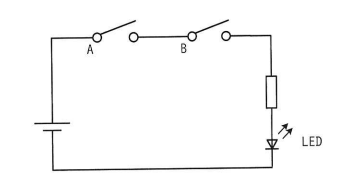
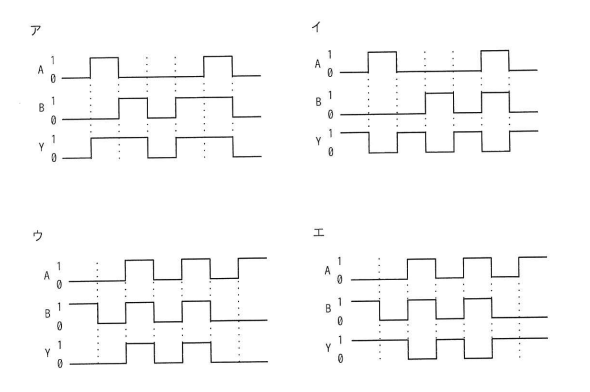

図はスイッチA及びBの状態によって，LEDが点灯又は消灯する回路である。スイッチAがオンの状態をA=1，オフの状態をA=0とし，スイッチBも同様にオンの状態をB=1，オフの状態をB=0とする。また，LEDが点灯する状態をY=1，消灯する状態をY=0とする。このとき，図の回路を動作させたときのタイミングチャートとして，適切なものはどれか。
回路図：電源 ── スイッチA ── スイッチB ── LED ── 電源（直列接続）
ア・イ・ウ・エ：A, B, Yの波形を示すタイミングチャート（4択）


ウ
| 選択肢 | 内容 | 補足 |
|---|---|---|
| ア | 波形パターン1 | YがAND条件（A=B=1のときのみY=1）と一致しないタイミングで点灯しており、回路の動作と矛盾する |
| イ | 波形パターン2 | スイッチがオフの状態でもYが1（点灯）になっている区間があり、AND条件と矛盾する |
| ウ | 波形パターン3 | 正解。AとBの両方が1（オン）になっている区間でのみYが1（点灯）になっており、それ以外の区間ではYが0（消灯）になっている。回路図の直列接続（AND条件）と完全に一致する |
| エ | 波形パターン4 | スイッチがオフの状態でもYが1（点灯）になっている区間があり、AND条件と矛盾する |
出典：2024年度 秋期 応用情報技術者試験 午前 問21（IPA）